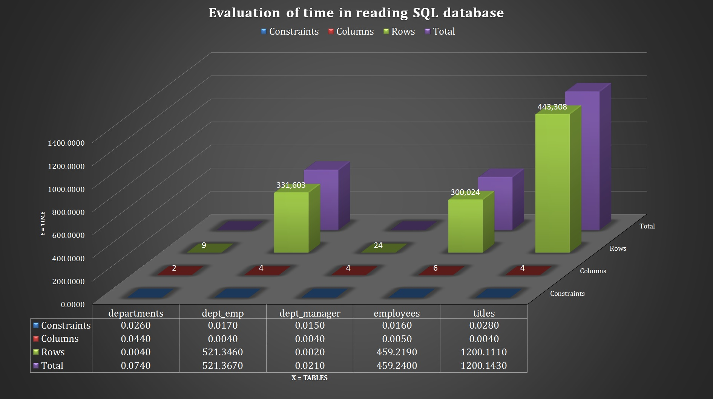
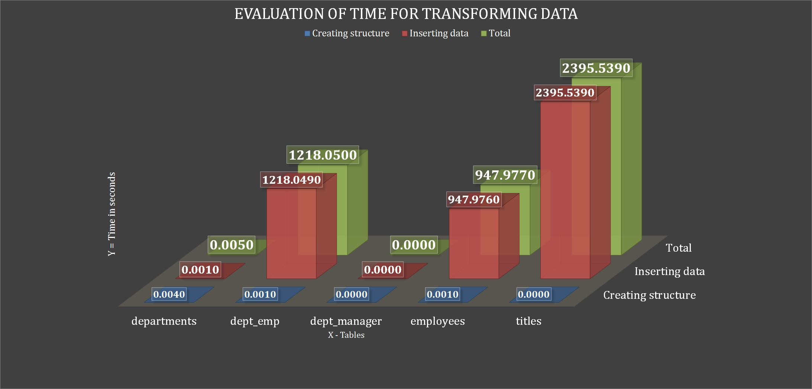
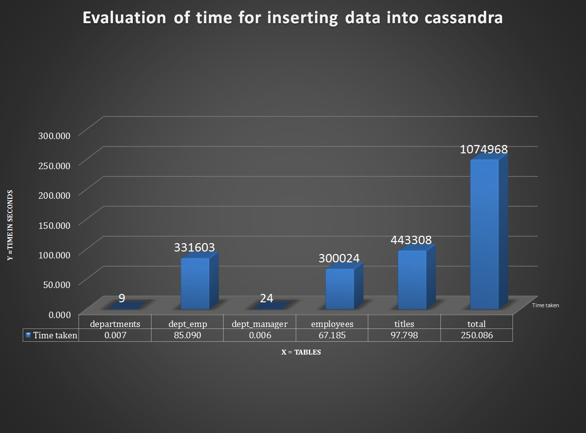
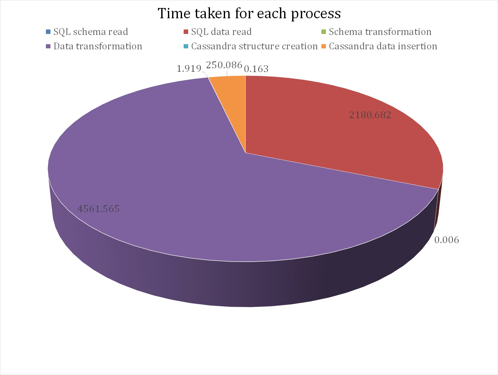

Test resuts and evaluation
cSiTra has been tested on many RDBMS databases, and one such database is the employee database which is made up of 5 Tables, 10 Constraints, 20 Columns and 1074968 number of records and following is the evaluation of time that it took for this database to be converted. In the graphs below, generally the x-axis represents the tables, y-axis the time in seconds, the numbers on the graph-buildings are the number of each entity present in the database.
Reading data and schema
The following image is a graph of time taken by the cSiTra to read the schema and data from the above mentioned employee database.
Transforming data and schema to Cassandra equivalents
The following image is a graph of time taken by the cSiTra to transform the SQL java objects to Cassandra java objects, that is transforming schema and data of the above mentioned employee database and creating the equivalent Cassandra keyspace .
Pushing the keyspace and data to Cassandra
The following image is a graph of time taken by the cSiTra to push the Cassandra java objects to the Cassandra, that is creating the keyspace and related structure and then inserting the data appropriately.
The total time taken
The following image is a graph of total time taken by cSiTra. to transform the whole employee database and convert it into employee keyspace in Cassandra. Vital thing to notice is that cSiTra spends most of its time in reading, and converting the data, and spends a negligible time in reading, creating, and converting the schema, this huge chunk of time is one of the problems that has been addressed in the following sections
